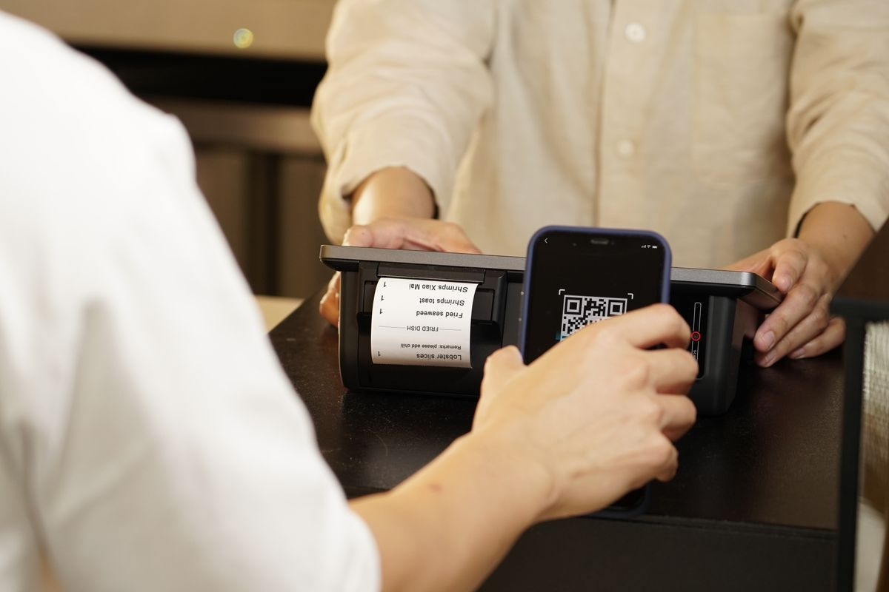
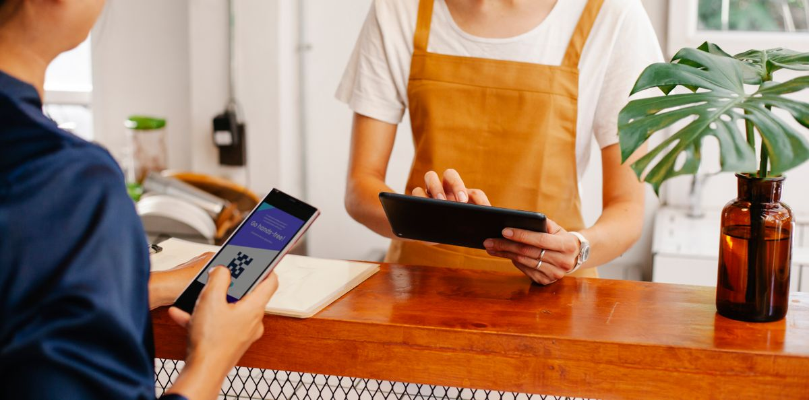
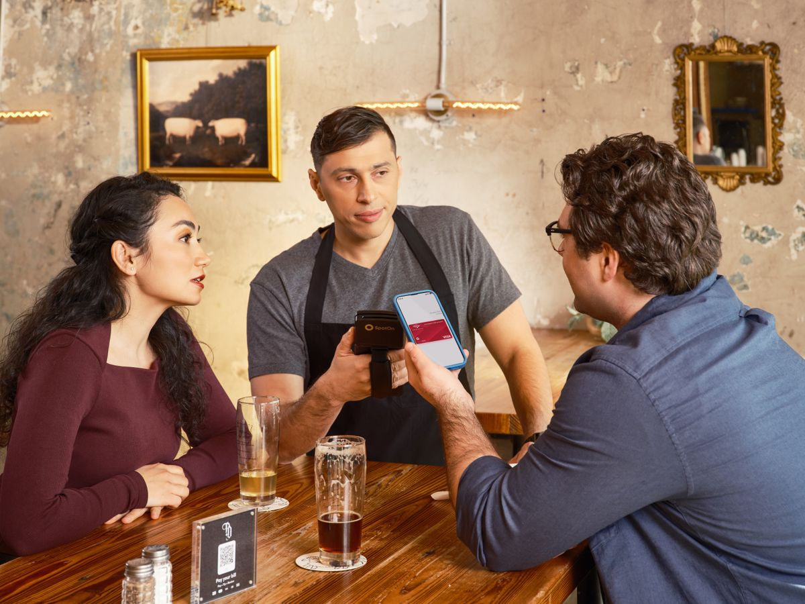

Kalau kamu jualan, entah warung, kopi keliling, atau jualan online, pembeli zaman sekarang maunya bayar pakai HP. QRIS bikin kamu bisa terima bayar dari semua aplikasi dompet digital dan mobile banking cukup dengan satu kode. Kabar baiknya, per November 2026 biaya potongannya lagi 0 persen untuk transaksi kecil. Ini cara daftarnya dari HP, gratis.
Kenapa sekarang waktu yang pas bikin QRIS
Bank Indonesia mengumumkan perluasan kebijakan potongan QRIS, yang namanya Merchant Discount Rate atau MDR, pada 17 Agustus 2026 dan berlaku efektif mulai 1 Oktober 2026. Isinya sederhana: transaksi QRIS sampai Rp100.000 bebas potongan untuk semua kategori usaha, dan khusus usaha mikro, bebas potongan sampai Rp500.000 per transaksi.
Lewat batas itu, tarif lama berlaku lagi. Usaha mikro yang terima bayar di atas Rp500.000 kena potongan 0,3 persen. Usaha kecil, menengah, dan besar yang terima bayar di atas Rp100.000 kena 0,7 persen. Sektor pendidikan 0,6 persen dan SPBU 0,4 persen. Jadi kalau warungmu terima bayar Rp50.000, uangnya masuk utuh. Kalau ada yang bayar Rp1.000.000 dan usahamu kategori mikro, potongannya sekitar Rp3.000.
Satu hal penting yang sering disalahpahami: potongan ini ditanggung pedagang dan tidak boleh dibebankan ke pembeli. Jadi jangan menaikkan harga dengan alasan ada potongan QRIS, itu melanggar aturan.

Syarat daftar QRIS yang perlu kamu siapkan
Pendaftaran QRIS itu sendiri gratis, tidak ada biaya daftar. Yang dipotong cuma MDR per transaksi seperti dijelaskan di atas. Sebelum mulai, siapkan dulu dokumen ini:
- KTP pemilik usaha yang masih berlaku.
- Nomor rekening bank aktif untuk menerima pencairan dana.
- Nama dan alamat usaha yang jelas.
- NPWP, kalau diminta penyedia yang kamu pilih.
- Foto tempat usaha, atau foto produk kalau jualan dari rumah.
Satu peringatan: QRIS cuma bisa didaftarkan lewat penyedia jasa pembayaran yang berizin Bank Indonesia. Hindari jasa calo yang minta bayaran untuk daftarkan QRIS, karena jalur resminya memang gratis.
Cara daftar QRIS lewat aplikasi, langkah demi langkah
Kamu tidak perlu datang ke bank. Semuanya bisa dikerjakan dari HP:
- Pilih penyedia resmi. Pilihannya banyak, misalnya aplikasi merchant dari bank, atau aplikasi dompet digital seperti DANA Bisnis dan GoPay Merchant. Semuanya sah selama penyedianya terdaftar di Bank Indonesia.
- Unduh aplikasinya dan buat akun. Kalau lewat DANA Bisnis, ada syarat yang sering bikin orang gagal di tengah jalan: akun DANA pribadimu wajib sudah Premium, artinya sudah verifikasi pakai e-KTP. Tanpa badge Premium, kamu tidak bisa pindah ke halaman Bisnis.
- Isi profil usaha. Nama usaha, jenis usaha, alamat lengkap, dan titik lokasi di peta.
- Unggah dokumen. Foto KTP, swafoto, dan foto tempat usaha atau produk. Pastikan fotonya jelas supaya tidak ditolak saat verifikasi.
- Tunggu verifikasi. Pengisian formulirnya bisa selesai dalam hitungan menit, dan verifikasi data biasanya selesai dalam hitungan hari kerja kalau data lengkap. Sesudah disetujui, kamu dapat kode QRIS khusus untuk usahamu, lengkap dengan nama usahamu tercetak di bawahnya.

Sesudah QRIS aktif, ini yang perlu kamu tahu
Cetak kode QRIS-mu dan tempel di meja kasir atau etalase supaya pembeli gampang memindai. Ada juga yang menempelkannya di struk atau kemasan untuk jualan online.
Uang hasil penjualan masuk ke rekening atau akun yang kamu daftarkan. Ketentuan pencairannya beda-beda di tiap penyedia, jadi cek di aplikasi yang kamu pakai. Catat baik-baik batas potongannya: transaksi kecil bebas MDR, tapi kalau ada pembeli bayar di atas Rp500.000 untuk usaha mikro atau di atas Rp100.000 untuk kategori lain, potongan 0,3 atau 0,7 persen otomatis terpotong dari uang yang masuk. Bukan masalah besar, tapi jangan kaget kalau nominal yang cair sedikit lebih kecil.
Terakhir, kode QRIS itu atas nama usahamu. Jangan dipakai untuk terima bayar yang bukan urusan usahamu, dan jangan meminjamkan kode QRIS ke orang lain.

Penutup
Intinya, bikin QRIS sekarang itu murah dan gampang. Daftarnya gratis dari HP, dan transaksi kecil bebas potongan berkat kebijakan baru Bank Indonesia. Kalau kamu jualan dan belum punya, ini momen yang pas buat mulai.
Sumber dan Info Resmi
Fakta dan detail di artikel ini merujuk ke sumber berikut, yang sudah diverifikasi isinya:
- Bank Indonesia (bi.go.id), 17 Agustus 2026: perluasan MDR QRIS 0 persen berlaku efektif 1 Oktober 2026, untuk merchant Usaha Mikro sampai Rp500.000 dan semua kategori merchant sampai Rp100.000.
- JCCNetwork.id: rincian tarif di atas batas (usaha mikro 0,3 persen; kecil, menengah, dan besar 0,7 persen; pendidikan 0,6 persen; SPBU 0,4 persen) dan larangan membebankan MDR ke pembeli.
- DailyFinance.id: syarat akun DANA Premium (verifikasi e-KTP), dokumen pendaftaran, dan verifikasi yang biasanya selesai dalam hitungan hari kerja.
- Telkomsel Jelajah: pendaftaran QRIS bisa dilakukan sepenuhnya dari HP tanpa datang ke bank.
- banksaqu.co.id: syarat dokumen pendaftaran (KTP, rekening bank aktif, nama dan alamat usaha, NPWP, foto tempat usaha) dan pendaftaran lewat PJP berizin BI yang gratis.